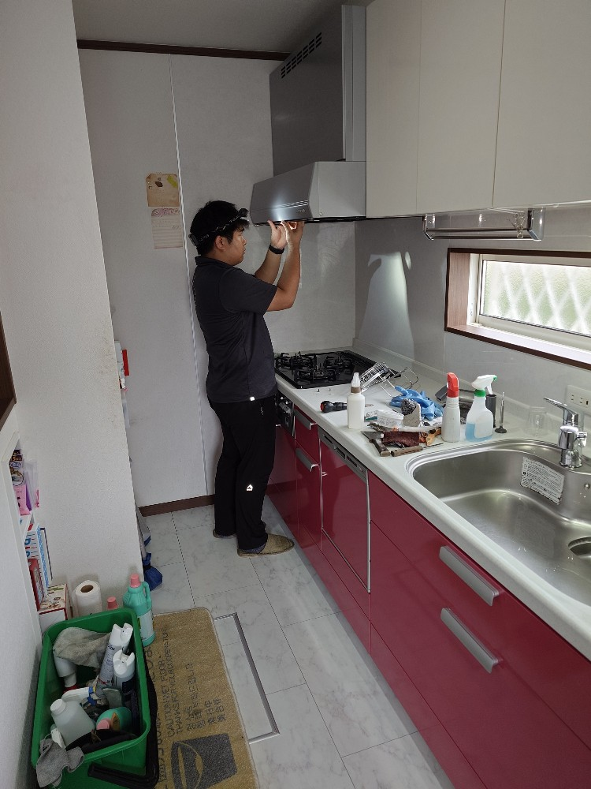
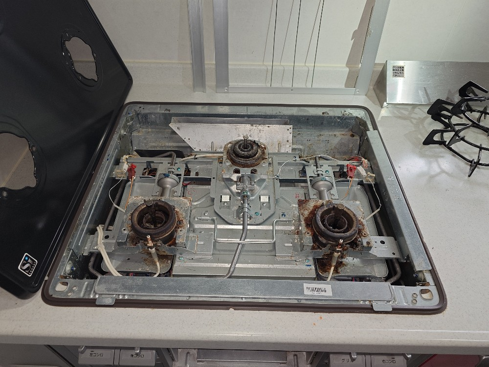
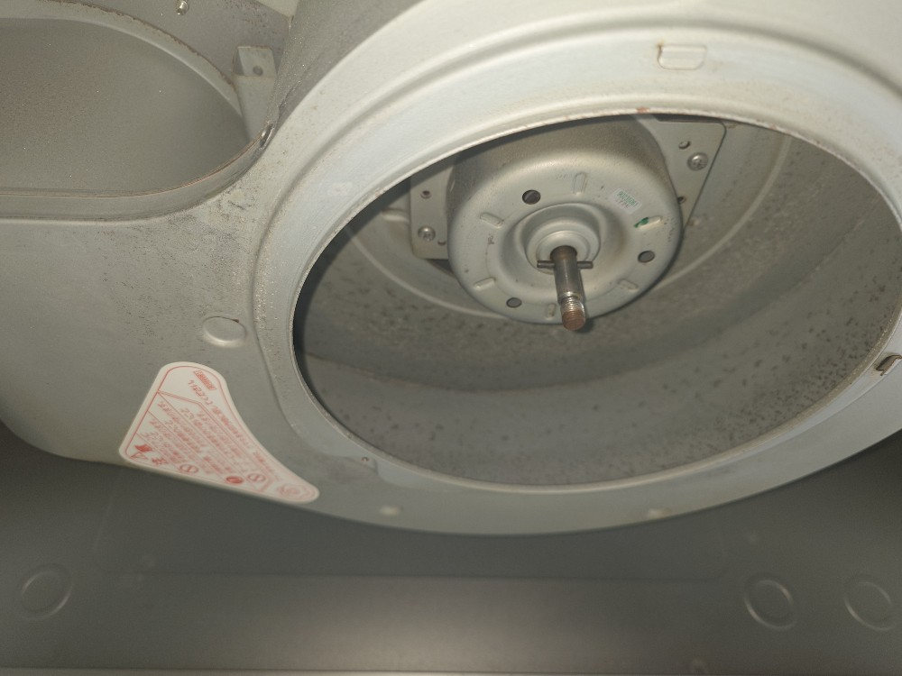
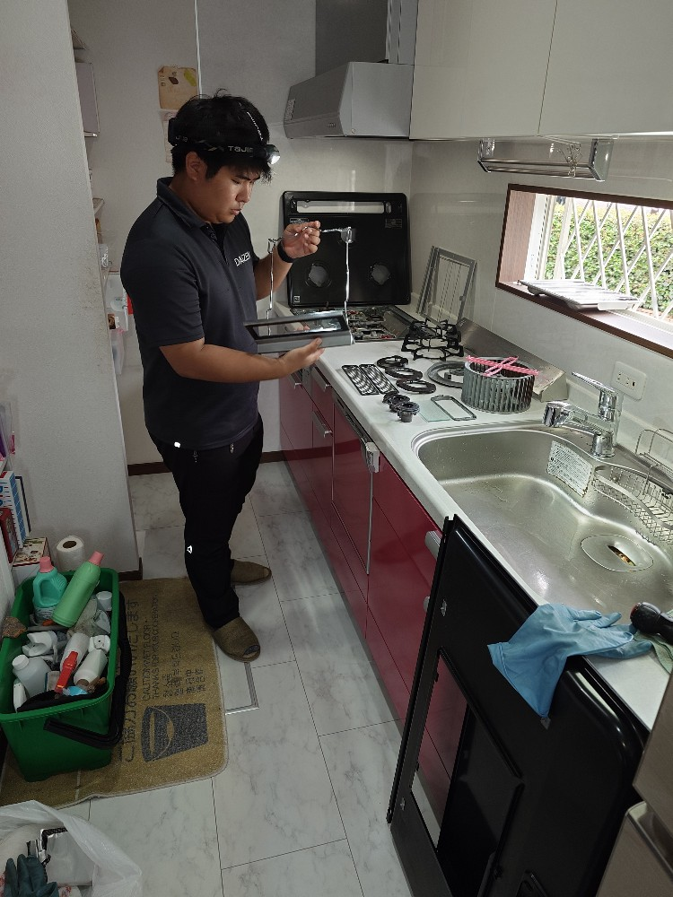
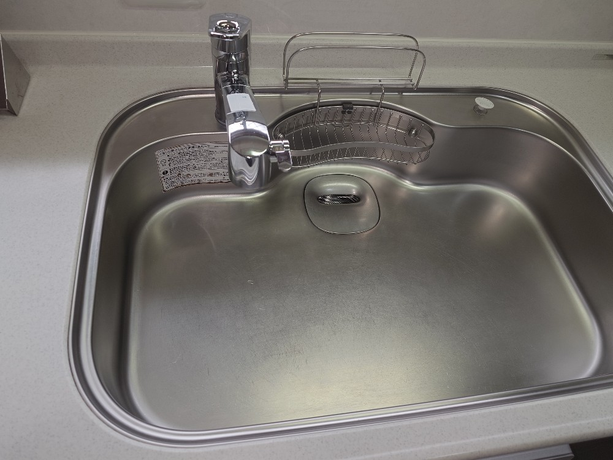
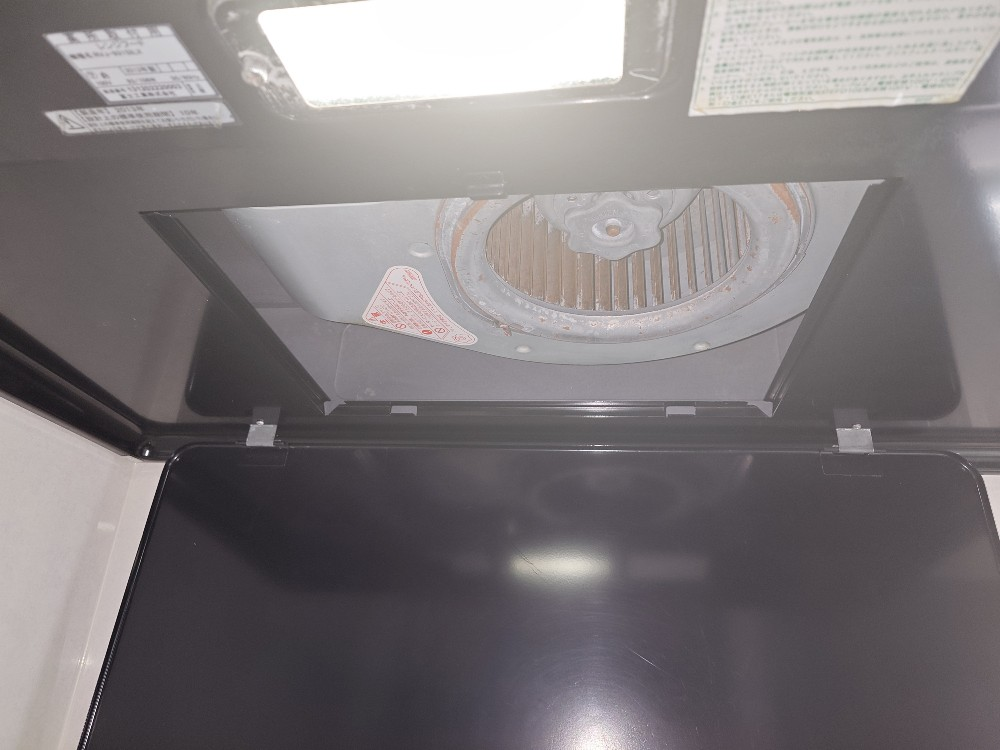
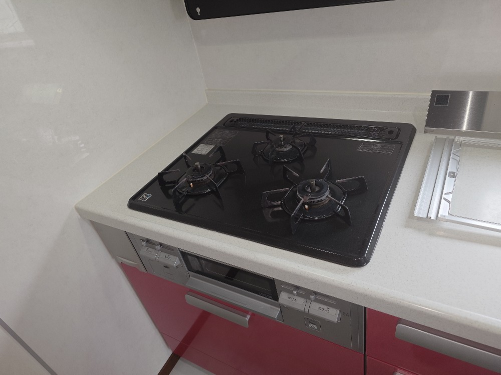
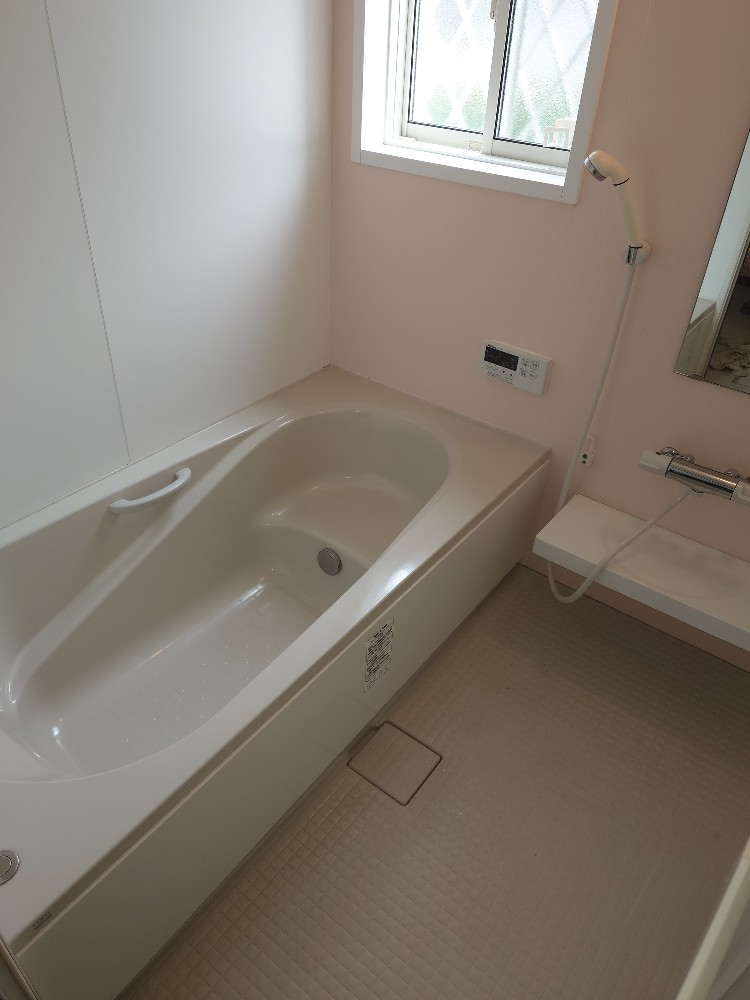
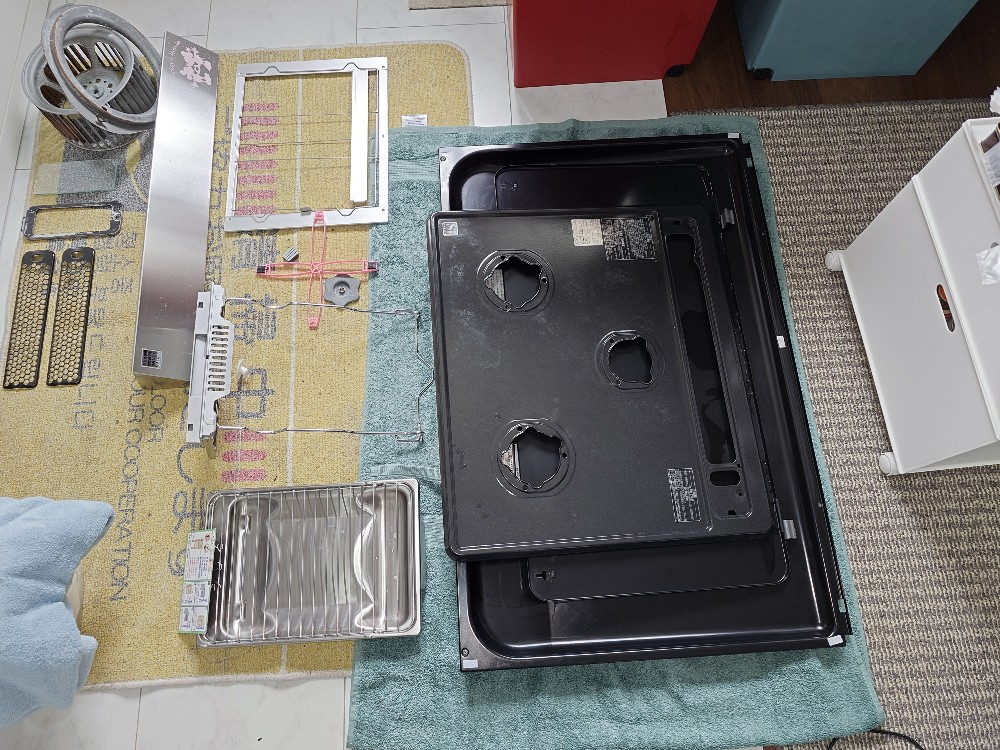
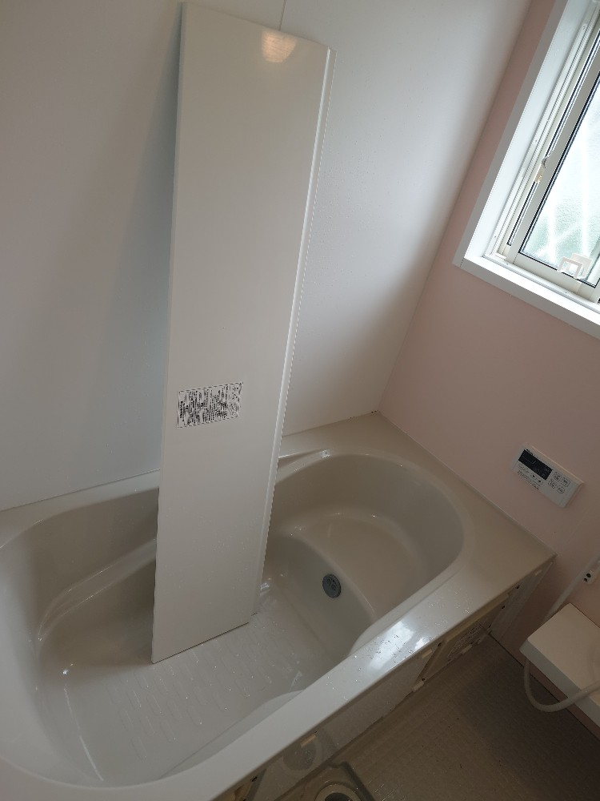

千葉県流山市ゆゆ様のご自宅・1軒家様の水回り定期清掃クリーニングを実施しました!ゆゆ様のご自宅の水回りクリーニングは、浴室スペシャルクリーニング、キッチンオール分解スペシャルクリーニング、お手洗い2箇所ウォシュレット分解クリーニング、洗面台クリーニングを毎年11月,5月の年2回実施しております!水回り定期清掃なので、料金も通常タイプよりお得な設定で、パーフェクトなDAIZENプロフェッショナルメソッドを最大限駆使したクリーニングが提供されております!

千葉県流山市のゆゆ様ご自宅の水回り定期清掃を実施しました!年に2回、5月と11月の水回りスペシャルクリーニングを実施しております。半年のタイムスパンですが、各所をオール分解してインスペクションしますと、浴室では「水アカ汚れ、石鹸カス汚れ、カビ汚れ、堆積スケール汚れ」が少なからず発生しておりますので、毎回徹底的に隅から隅までクリーニングします。キッチン、キッチン換気扇、グリル周り、コンロ周りも同様に、スペ分解インスペクションを実施して、油汚れ、水アカ汚れ、スケール汚れを全てパーフェクトに除去しております。2箇所有るお手洗いも、半年のタイムスパンでも、尿石汚れ、黄ばみ、各所のホコリ汚れが必ず発生しておりますので、ウォシュレットも分解して外し、隅から隅まで除菌クリーニングを実施しております。今回もスッキリと全ての水回りが綺麗になりました！ゆゆ様も、ご家族もお慶びになりました、ありがとうございました!









